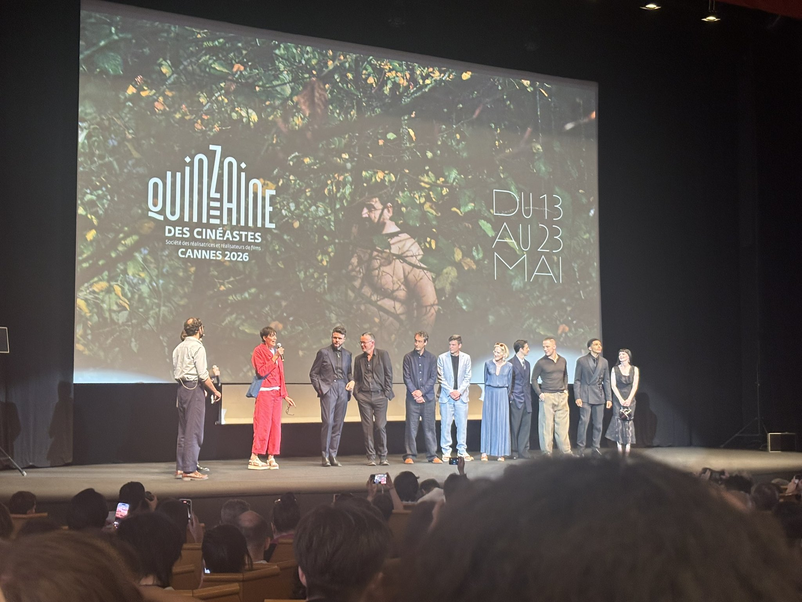
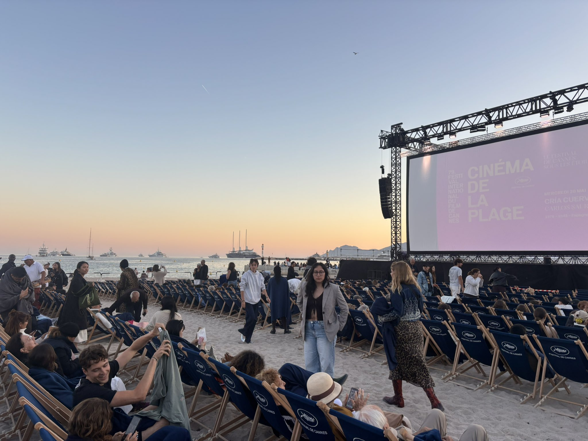
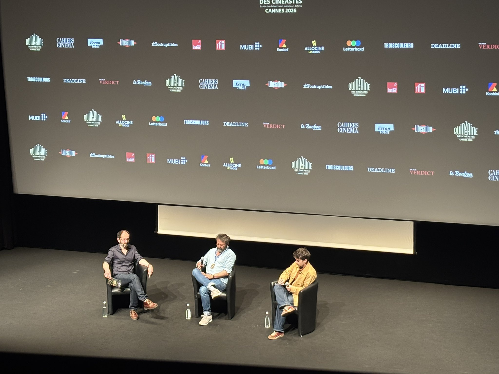

2026
President del Jurat
Park
Chan-wook
Cineasta coreà
Chan-wook
79a edició · Festival de Canes
Nou films vistos en quatre dies a Canes. Impressions en calent des de les sales de la Quinzaine des Cinéastes i altres seccions. Les crítiques completes s'aniran publicant a primerpla.es en les pròximes setmanes.



Tot va començar amb una indignació. L'any 1938, el govern francès va abandonar el Festival de Venècia quan va comprovar que Mussolini el manipulava per premiar films nazis i feixistes. Jean Zay, ministre d'Educació Nacional, va decidir crear un festival alternatiu i independent: el Festival de Canes.
La guerra ho va aturar tot. L'edició inaugural es va celebrar finalment el setembre de 1946, en un clima d'eufòria postbèl·lica, amb estrelles com Cary Grant i Marlene Dietrich als carrers de Cannes. Des de llavors, el festival ha crescut fins a convertir-se en l'esdeveniment cinematogràfic més important del món, per davant de Venècia i Berlín.
La Palma d'Or com a premi principal es va instaurar el 1955. Des d'aleshores, l'han guanyat directors com Fellini, Coppola, Tarantino, Haneke o Kore-eda. Avui, la Palma continua sent el guardó cinematogràfic més cobejat del món.
"Quan el món perd el rumb, mostrar pel·lícules de tots els racons del globus no és un gest trivial. És una defensa del bé més preuat de la humanitat: la llibertat de pensament."
El director romanès de 4 mesos, 3 setmanes i 2 dies i Baccalauréat guanya la seva primera Palma d'Or. Minotaur de Zvyagintsev s'emporta el Gran Premi, i The Dreamed Adventure de Grisebach el Premi del Jurat.
Primera presència de Primer Pla al Festival de Canes. Cobertura acreditada de la Quinzaine des Cinéastes amb cròniques en directe de Butterfly Jam, I See Buildings, Le Vertige i més.
El cineasta coreà de Oldboy i The Handmaiden va presidir el jurat de la competició principal.
El director de El Senyor dels Anells i la llegenda del cinema i la música van rebre les Palmes d'Or honorífiques.
Butterfly Jam de Kantemir Balagov va obrir la secció, mentre que Le Vertige de Quentin Dupieux la va tancar. La selecció completa va incloure 22 films.
El cineasta coreà de Oldboy i The Handmaiden presidirà el jurat de la competició principal. El jurat d'Un Certain Regard el presidirà l'actriu francesa Leïla Bekhti.
El director de El Senyor dels Anells i la llegenda del cinema i la música rebran les Palmes d'Or honorífiques en reconeixement a les seves trajectòries.
L'actriu francesa Eye Haïdara serà la mestre de cerimònies de les gales d'obertura i clausura de la 79a edició del festival.
Mil films més que fa deu anys. La selecció final inclou 22 títols en competició, cinc dels quals dirigits per dones. Almodóvar, Farhadi i Kore-eda lideren el cartell.
Butterfly Jam de Kantemir Balagov obrirà la secció, mentre que el debut en animació de Quentin Dupieux, Vertiginous, la tancarà. La selecció completa es va anunciar el 14 d'abril.